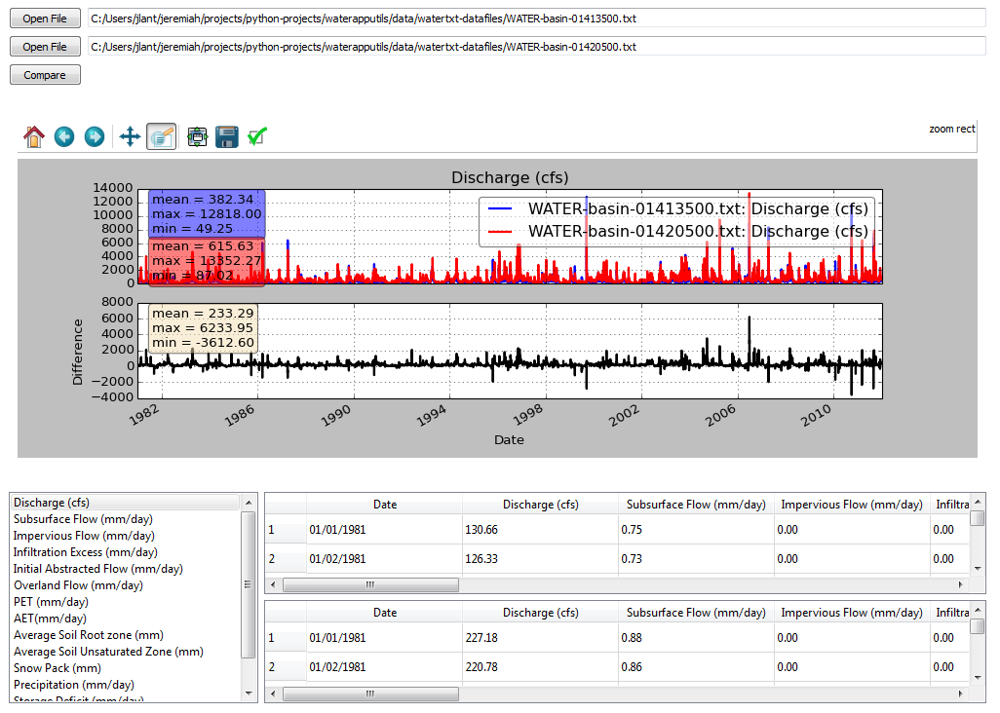
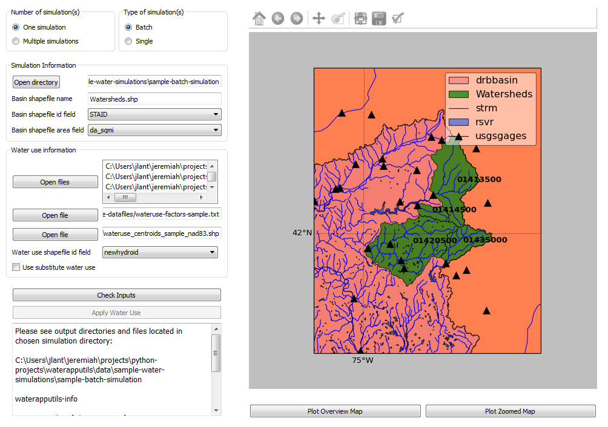
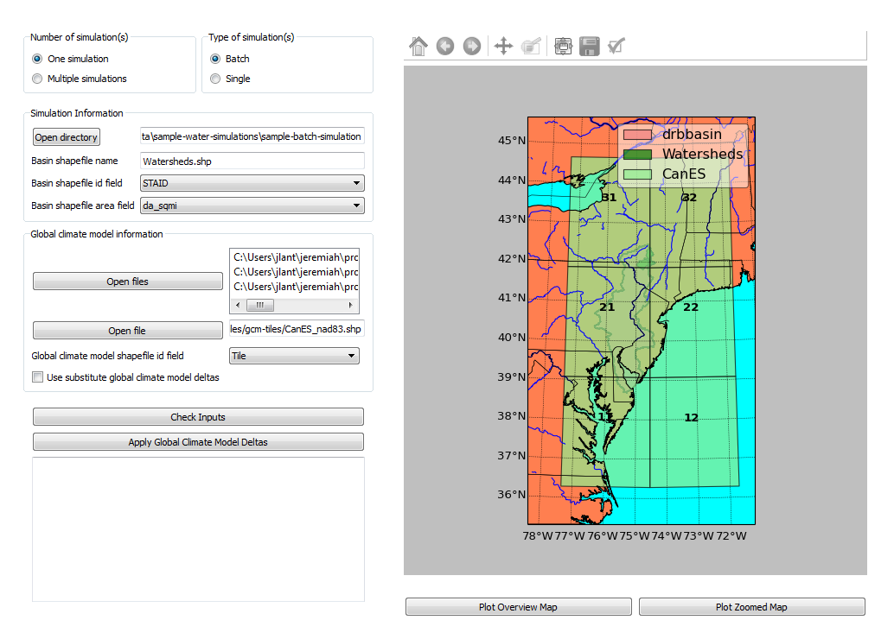

waterapputils
Description
waterapputils is a tool used for analyzing, processing, and updating model simulations from the U.S. Geological Survey Indiana and Kentucky Water Science Centers (INKY) WATER application. waterapputils is written in Python, and adds new functionality, outside the WATER application, by allowing users to apply various future climate projections using a change-factor (delta) approach with data from the Coupled Model Intercomparison Project (CIMP5), and aggregated water use data to model simulations. waterapputils has a Command Line Interface and a Graphical User Interface along with bash scripts, Run Sample Datasets Shell Script and Process Many Simulations Shell Script, to help automate processing tasks and run unit tests.
The WATER application is a graphical user interface, written in VB.NET, wrapped around a variant of the rainfall-runoff model called Topmodel (Topography based hydrological mode) by Keith Beven, Professor at Lancaster University. Topmodel estimates river discharge and spatial soil water saturation patterns for a particular catchment basin using topographic, climatic, and geological input data parameters. The original WATER application was developed by the U.S. Geological Survey Indiana and Kentucky Water Science Centers (INKY). References for the WATER application include:
Some sample highlights of waterapputils include:
Processes WATER simulation output files (
txtformat).Processes WATER simulation database files that store information about a particular model simulation (
xmlformat).Applies various statistically downscaled global climate models ([GCMs]) to model simulations for a particular watershed basin or set of watershed basins based on the spatial intersection of the watershed(s) of interest with the global climate change scenario coverage of interest.
Applies water use data to model simulations for a particular for a particular watershed basin or set of watershed basins based on the spatial intersection of the watershed(s) of interest with the water use coverage.
Generates plots of all parameters found in WATER output files (
txtformat) with simple statistics.Generates plots of timeseries parameters found in WATER simulation database files (
xmlformat).Generates comparison and difference plots between two WATER simulation output files.
Generates comparison and difference plots between two WATER simulation database files.
Generates maps of study area for a particular model simulation using basemap
Logs errors and tracebacks.
A multi-threaded graphical user interface (GUI) called waterapputils_gui.
A sample image of processing and analyzing WATER output files using the GUI:

Contents
Run Sample Datasets Shell Script
Process Many Simulations Shell Script
Version
1.0.0
Command Line Interface
Usage:
$ python waterapputils.py [option]Command Line Arguments:
| Commands | Description |
|---|---|
-h |
show list of available commands |
-watertxt |
list WATER simulation output file(s) to process; WATER.txt
|
-watertxtfd |
open file dialog window to select WATER simulation output file(s) to process; WATER.txt
|
-watertxtcmp |
list 2 WATER simulation output file(s) to compare; WATER.txt
|
-watertxtcmpfd |
open file dialog window to select 2 WATER simulation output file(s) to compare; WATER.txt
|
-waterxml |
list WATER simulation database file(s) to process; WATERSimulation.xml
|
-waterxmlfd |
open file dialog window to select WATER simulation database file(s) to process; WATERSimulation.xml
|
-waterxmlcmp |
list 2 WATER simulation database file(s) to compare; WATERSimulation.xml
|
-waterxmlcmpfd |
open file dialog window to select 2 WATER simulation database files to compare; WATERSimulation.xml
|
-applygcmdeltas |
apply global climate change deltas to WATER simulation database file(s); WATERSimulation.xml; details specified in user_settings.py
|
-applysubgcmdeltas |
apply updated global climate change deltas from sub_gcm_delta_info_file_name variable in user_settings.py to WATER simulation database file(s); WATERSimulation.xml; details specified in user_settings.py
|
-applywateruse |
apply water use data to WATER simulation output file(s); WATER.txt; details specified in user_settings.py
|
-applysubwateruse |
apply water use data from sub_wateruse_info_file_name variable in user_settings.py to WATER simulation output file(s); WATER.txt; details specified in user_settings.py
|
-oasis |
create output data file(s) for OASIS program; tab delimited file(s) of timeseries of discharge |
-ecoflowstationid |
create output data file(s) for ecoflow program; comma separated file(s) of timeseries of discharge for a specific basin (station) id |
-ecoflowdaxml |
create output data file(s) for ecoflow program; comma separated file(s) of basin (station) id and its respective drainage area in square miles calculated using data in the WATERSimulation.xml
|
-ecoflowdashp |
create output data file(s) for ecoflow program; comma separated file(s) of basin (station) id and its respective drainage area in square miles calculated from the shapefile(s) |
-outfilename |
OPTIONAL : output filename to be used with -ecoflowdaxml or -ecoflowdashp commands in writing the drainage area comma separated file |
-labelfield |
OPTIONAL : label field name (basin number / station id) to be used with -ecoflowdashp command in writing the drainage area comma separated file; Default label field is the FID in the basin(s) shapefile |
-areafield |
OPTIONAL : area field name in a basin(s) shapefile to be used with -ecoflowdashp command in writing the drainage area comma separated file; Default action is to calculate area from the shapefile(s) |
-samplesingle |
OPTIONAL : flag used with -applywateruse, -applysubwateruse, -applygcmdeltas, -applysubgcmdeltas to specify the use of the sample single simulation datasets |
-samplebatch |
OPTIONAL : flag used with -applywateruse, -applysubwateruse, -applygcmdeltas, -applysubgcmdeltas to specify the use of the sample batch simulation datasets |
-simdir |
OPTIONAL : flag used with -applywateruse, -applysubwateruse, -applygcmdeltas, -applysubgcmdeltas to specify a path to a specific WATER simulation instead of specifying it in user_settings.py
|
Example - processing a WATER.txt file
$ python waterapputils.py -watertxt <path-to-WATER.txt-file>Example - Running water use using the settings in user_settings.py
$ python waterapputils.py -applywateruseExample - Running water use by supplying a path to a simulations directory instead of specifying the simulations directory in user_settings.py
$ python waterapputils.py -applywateruse -simdir <path-to-simulations-directory>Editing settings in user_settings.py
All the setting for running waterapputils are contained in user_settings.py file. A user can edit the settings by editing the Python string variables. Most variables are path variables to required data files and basin shapefile attribute variables. A user will typically only edit the section called WATER simulation information. This section contains information about a WATER simulation. A WATER simulation can be either a single simulation or a batch simulation. Each simulation type has a few different outputs along with a different directory structure.
Run Sample Datasets Shell Script
Run sample datasets with run_sample_datasets.sh
The shell script run_sample_datasets.sh is a shell script that can be used to run automated tests and run many of the command line arguments using the sample datasets.
Usage:
$ run_sample_datasets.sh [option]
$ run_sample_datasets.sh [[[-txt] [-xml] [-wateruse] [-oasis] [-ecoflowstationid] [ecoflowdaxml] [-ecoflowdashp] [-gcmdelta] [-mapsim] [-all] [-tests] -makeclean] | [-h]]Command line arguments for the shell script run_sample_datasets.sh:
| Commands | Description |
|---|---|
-h |
show list of available commands |
-txt |
run -watertxt and -watertxtcmp using the sample WATER simulation output TEXT files
|
-xml |
run -waterxml and -waterxmlcmp using the sample WATER simulation output XML files
|
-wateruse |
run and apply water use data to sample WATER simulations; single and batch simulations |
-subwateruse |
run and apply substitute water use data to sample WATER simulations; single and batch simulations |
-gcmdelta |
run and apply global climate model data to sample WATER simulations; single and batch simulations |
-subgcmdelta |
run and apply substitute water use data to sample WATER simulations; single and batch simulations |
-oasis |
create an oasis formated water use output file using the sample water use applied WATER TEXT file |
-ecoflowstationid |
create an ecoflow formated water use output file using the sample water use applied WATER TEXT file |
-ecoflowdaxml |
create an ecoflow formated drainage area output file using the sample WATER XML file to calculate basin area |
-ecoflowdashp |
create an ecoflow formated drainage area output file using the sample basin shapefiles |
-mapsim |
create maps for single and batch simulations |
-all |
run (mostly) all commands; -tests, -txt, -xml, -wateruse, -gcmdelta, -oasis, -ecoflowstationid, -ecoflowdaxml, -ecoflowdashp, mapsim
|
-tests |
run units tests use nosetests |
-makeclean |
cleans/removes all output of running sample dataset in in the sample-water-simulations directory |
Example - apply water use to single and batch simulations:
$ run_sample_datasets.sh -wateruseProcess Many Simulations Shell Script
Applying water use and gcm deltas to many WATER simulations at one time using run_simulations.sh
The shell script run_simulations.sh is a shell script that can be used to automate the processing of many WATER simulations. run_simulations.sh can be used to apply water use and global climate change scenarios to multiple WATER simulations that are contained in the same directory. A user will provide a valid option along with the path to the directory containing all the WATER simulations that need to be processed. This directory should contain all the same type of WATER simulations single or batch, but not both. A user should make sure that the proper settings for processing a single or batch simulation are set in the user_settings.py file. Note that the simulation_directory variable will be ignored when using this script, but all the other settings will be used accordingly.
Usage:
$ run_simulations.sh [option] <path-to-simulations-directory>
$ run_simulations.sh [[[-applywateruse] [-applysubwateruse] [-applygcmdelta] [-applysubgcmdelta]] <path-to-simulations-directory> | [-h]]Command line arguments for the shell script run_simulations.sh:
| Commands | Description |
|---|---|
-h |
show list of available commands |
-applywateruse |
run and apply water use data to sample WATER simulations; single and batch simulations |
-applysubwateruse |
run and apply substitute water use data to sample WATER simulations; single and batch simulations |
-applygcmdelta |
run and apply global climate model data to sample WATER simulations; single and batch simulations |
-applysubgcmdelta |
run and apply substitute water use data to sample WATER simulations; single and batch simulations |
Example - apply water use to many WATER simulations :
$ run_simulations.sh -applywateruse <path-to-simulations-directory>Graphical user interface
The multi-threaded graphical user interface (GUI) called waterapputils_gui can be started
using the command below or by simply double clicking on the waterapputils_gui.py file.
$ python waterapputils_gui.pyThe GUI consists of 4 tabs:
- Process WATER output text file
- Compare 2 WATER output text files
- Apply water use to WATER simulations
- Apply global climate model (GCM) deltas to WATER simulations
Process WATER output text file
A user opens a WATER simulation output text file (WATER.txt), and all the paramters and corresponding data are processed. The first parameter in the data file is plotted initially and the user can use the list on the bottom left of the tab to select different parameters to plot. The plot includes a text area showing some simple statistics for the parameter. All the parameters and corresponding data are also placed in a read-only table. A user can interact with the plot using the buttons on the top of the plotting area (zoom, pan, etc.). In addition, a user can enable a span selector which allows a user to query the data for specific time periods. Upon using the span selector, the simple stats displayed in the text area with the simple statistics updates for the selected time period.
Compare 2 WATER output text files
A user opens 2 WATER simulation output text files, and the Compare button will be enabled. Upon clicking the Compare button, all the parameters and corresponding data are processed and compared. The first parameters in the data file are overlayed together with the first file colored as blue and the second file colored as red. A second plot is made which shows the difference between the respective parameters in each file. The user can use the list on the bottom left of the tab to select different parameters to compare. All the parameters and corresponding data for both files are placed in read-only tables. A user can interact with the plots using the buttons on the top of the plotting area (zoom, pan, etc.). Note that the difference plot is tied to the overlay plot, meaning that when a user pans or zooms on the overlay plot, the difference plot will zoom or pan with the overlay plot.
Apply water use to WATER simulations
Allows a user to apply water use data to WATER simulation output text files (WATER.txt).
Number of simulation(s) - a user selects the number of WATER simulations.
- One simulation (default) - one batch or single type WATER simulation.
- Multiple simulations - more than one batch or single type WATER simulations.
NOTE: The directory containing all the WATER simulations to process must only contain WATER simulations. Do not include extraneous files or directories in the parent directory containing all the WATER simulations to process.
Type of simulation(s) - a user selects the type of WATER simulation.
- Batch - more than one basin. For an example, please see the Sample Batch Simulation.
- Single - one basin. For an example, please see the Sample Single Simulation.
The following are the directory structures created by WATER for batch and single simulations:
Batch Simulation:
simulation/
basin1/
amask/
basinmask/
fmask/
info/
rmask/
Temp/
.
.
WATER.txt
WATERSimulation.xml
basin2/
basin3/
.
.
Water.txt
Watersheds.shp
Single Simulation:
simulation/
amask/
basinmask/
fmask/
info/
rmask/
Temp/
.
.
basinMask.shp
WATER.txt
WATERSimulation.xml
Simulation Information - a user selects the WATER simulation of interest to apply water use too.
If a valid WATER simulation is selected, the rest of the inputs in the Simulation Information section will auto-populate. A user can select the proper Basin shapefile id field that was used when running the WATER application. The Basin shapefile id field is was used by the WATER application to name the output basin directories in the simulation directory structure. The Basin shapefile area field is used to get the areas of each respective basin for use in an external ecoflow program.
NOTE: A batch WATER simulation will contain a shapefile of the basins called Watersheds.shp. A single WATER simulation will contain a shapefile of the basin called basinMask.shp. A WATER simulation must have an associated Watersheds.shp or basinMask.shp file.
Water Use Information - a user selects the seasonal water use data files and associated information.
A user selects 4 seasonal water use files:
- January, Feburary, March
- April, May, June
- July, August, September
- October, November, December
A user selects a water use factor file which can be used to adjust the water use data values in the seasonal water use files.
A user selects the water use shapefile which is a shapefile of water use points across the entire modeling domain.
NOTE: All WATER application shapefiles are in the Albers NAD83 projection. Please ensure that the water use shapefile is in the same projection as all the other WATER application shapefiles.
A user chooses the id field from the water use shapefile that corresponds to the id field used in the water use data files.
NOTE: The sample water use files and water use shapefile have newhydroid as the id field.
If the basins in the WATER use simulation do not overlap/intersect with the water use shapefile points, then the user can choose to apply substitute water use.
NOTE: In order to apply substitute water use, the user must first apply water use without this option. The waterapputils program will warn and log any basins in the WATER simulation that do not overlap/intersect with the water use shapefile points.
The waterapputils program will create a file called wateruse_non_intersecting_centroids.txt in a directory called waterapputils-info with a list of the basins that do not overlap/intersect. A user must manually enter the proper water use shapefile id (i.e. newhydroid) values to be used when applying the substitute water use. In order to apply substitute water use, the file called wateruse_non_intersecting_centroids.txt in a directory called waterapputils-info must exist.
A user clicks the Check Inputs button which checks and makes sure that all the fields have been entered. Upon all the fields being entered and the ChecK Inputs button being pressed, the Apply Water Use, Plot Overview Map, and Plot Zoomed Map buttons are enabled. If a user clicks the Apply Water Use, then waterapputils applies water use to the WATER simulation given the data provided by the user. The waterapputils_gui will apply water use in a separate thread meaning that the process will be run in the background allowing the user to continue using other parts of the waterapputils_gui without interferring with the water use processing.
NOTE: When processing water use, a warning about a QPixmap may appear. This is not an error, but only a warning that can safely be ignored here. The warning stems from the use of using the same plotting code used in the command line version of waterapputils when applying water use. If a user clicks the Plot Overview Map, a map of the WATER basin shapefile (Watersheds.shp or basinMask.shp) will be plotted in a zoomed out view or the entire modeling domain. If a user clicks the Plot Zoomed Map, a map of the WATER basin shapefile (Watersheds.shp or basinMask.shp) will be plotted in a zoomed in view with additional shapefiles (i.e. usgs gages).
Apply global climate model (GCM) deltas to WATER simulations
Allows a user to apply global climate model (GCM) deltas to WATER simulation database files (WATERSimulation.xml).
Number of simulation(s) - a user selects the number of WATER simulations.
- One simulation (default) - one batch or single type WATER simulation.
- Multiple simulations - more than one batch or single type WATER simulations.
NOTE: The directory containing all the WATER simulations to process must only contain WATER simulations. Do not include extraneous files or directories in the parent directory containing all the WATER simulations to process.
Type of simulation(s) - a user selects the type of WATER simulation.
- Batch - more than one basin. For an example, please see the Sample Batch Simulation.
- Single - one basin. For an example, please see the Sample Single Simulation.
The following are the directory structures created by WATER for batch and single simulations:
Batch Simulation:
simulation/
basin1/
amask/
basinmask/
fmask/
info/
rmask/
Temp/
.
.
WATER.txt
WATERSimulation.xml
basin2/
basin3/
.
.
Water.txt
Watersheds.shp
Single Simulation:
simulation/
amask/
basinmask/
fmask/
info/
rmask/
Temp/
.
.
basinMask.shp
WATER.txt
WATERSimulation.xml
Simulation Information - a user selects the WATER simulation of interest to apply global climate model deltas too.
If a valid WATER simulation is selected, the rest of the inputs in the Simulation Information section will auto-populate. A user can select the proper Basin shapefile id field that was used when running the WATER application. The Basin shapefile id field is was used by the WATER application to name the output basin directories in the simulation directory structure. The Basin shapefile area field is used to get the areas of each respective basin for use in an external ecoflow program.
NOTE: A batch WATER simulation will contain a shapefile of the basins called Watersheds.shp. A single WATER simulation will contain a shapefile of the basin called basinMask.shp. A WATER simulation must have an associated Watersheds.shp or basinMask.shp file.
Global Climate Model Delta Information - a user selects 3 global climate model delta files and associated information.
A user selects 3 global climate model delta files:
- PET.txt
- Ppt.txt
- Tmax.txt
A user selects the global climate model shapefile which is a shapefile of rectangular tiles for a particular global climate model that covers the entire modeling domain.
NOTE: All WATER application shapefiles are in the Albers NAD83 projection. Please ensure that the global climate model shapefile shapefile is in the same projection as all the other WATER application shapefiles.
A user chooses the id field from the global climate model shapefile that corresponds to the id field used in the 3 global climate model delta files.
NOTE: The sample global climate model delta files and global climate model shapefile have Tile as the id field.
If the basins in the WATER use simulation do not overlap/intersect with the global climate model shapefile tiles, then the user can choose to apply substitute global climate model deltas.
NOTE: In order to apply substitute global climate model deltas, the user must first apply global climate model deltas without this option. The waterapputils program will warn and log any basins in the WATER simulation that do not overlap/intersect with the global climate model deltas shapefile tiles.
The waterapputils program will create a file called gcm_delta_non_intersecting_tiles.txt in a directory called waterapputils-info with a list of the basins that do not overlap/intersect. A user must manually enter the proper global climate model deltas shapefile id (i.e. Tile) values to be used when applying the substitute global climate model deltas. In order to apply substitute global climate model deltas, the file called gcm_delta_non_intersecting_tiles.txt in a directory called waterapputils-info must exist.
A user clicks the Check Inputs button which checks and makes sure that all the fields have been entered. Upon all the fields being entered and the ChecK Inputs button being pressed, the Apply Water Use, Plot Overview Map, and Plot Zoomed Map buttons are enabled. If a user clicks the Apply Global Climate Model Deltas, then waterapputils applies global climate model deltas to the WATER simulation given the data provided by the user. The waterapputils_gui will apply global climate model deltas in a separate thread meaning that the process will be run in the background allowing the user to continue using other parts of the waterapputils_gui without interferring with the global climate model deltas processing.
NOTE: When processing global climate model deltas, a warning about a QPixmap may appear. This is not an error, but only a warning that can safely be ignored here. The warning stems from the use of using the same plotting code used in the command line version of waterapputils when applying global climate model deltas. If a user clicks the Plot Overview Map, a map of the WATER basin shapefile (Watersheds.shp or basinMask.shp) will be plotted in a zoomed out view or the entire modeling domain. If a user clicks the Plot Zoomed Map, a map of the WATER basin shapefile (Watersheds.shp or basinMask.shp) will be plotted in a zoomed in view with additional shapefiles (i.e. usgs gages).
Testing
Automated tests for waterapputils were written using the nose library, and are contained in the tests directory. nose must be
installed in order to run tests. Automated tests can be run using the nosetests command at the project level directory (not
within the tests directory, but the waterapputils directory containing the tests directory). A successful test run
will look something like the following:
$ pwd
/path/to/waterapputils
$ nosetests
SETUP: deltatxt tests
........TEARDOWN: deltatxt tests
...
SETUP: waterxml tests
........TEARDOWN: waterxml tests
--------------------------------------------------
Ran 91 tests in 1.049s
OKRepository layout
bin/ # executables/scripts
data/ # sample data files to use with software and associated information
deltas-gcm/ # statistically downscaled global climate model data
sample-water-simulations # sample WATER application simulations and datasets
sample-batch-simulation # sample WATER application batch run simulation
sample-datasets # sample WATER application simulation datasets
sample-single-simulation # sample WATER applicaiton single run simulation
spatial-datafiles/ # spatial data; shapefile format
watertxt-datafiles/ # sample WATER.txt files
wateruse-batch-run/ # sample batch run output from WATER
wateruse-datafiles/ # sample water use files
waterxml-datafiles/ # sample WATERSimulation.xml files
docs/ # Sphinx code documentation
tests/ # tests
deltas_tests.py # tests for deltas module
helpers_tests.py # tests for helper module
spatialvectors_test.py # tests for spatialvectors module
watertxt_tests.py # tests for watertxt module
wateruse_tests.py # tests for wateruse module
waterxml_tests.py # tests for waterxml module
waterapputils/ # directory containing code modules
waterapputils.py # main controller; calls respective module
user_settings.py # user settings to control and specify data inputs for water use and global climate model processing along with control of naming outputs
gui/ # gui specific files
modules/
deltas.py # handles processing of global climate model data
deltas_viewer.py # handles view (plotting) of global climate model data
gcm_delta_processing.py # handles the global climate model delta factors processing using settings from the user_settings.py file
helpers.py # helper functions
spatialdata_viewer.py # handles view (mapping) of spatial data; uses basemap library
spatialvectors.py # handles spatial data
specific_output_file_processing.py # handles specific output file processing for external OASIS and Ecoflow programs
water_files_processing.py # handles the WATER application output and database file processing using settings from the user_settings.py file
waterapputils_logging.py # handles error logging
watertxt.py # handles processing of WATER.txt simulation output files
watertxt_viewer.py # handles view (plotting) of WATER.txt simulation output files
wateruse.py # handles processing of water use data
wateruse_processing.py # handles the water use processing using settings from the user_settings.py file
waterxml.py # handles processing of WATERSimulation.xml simulation database files
waterxml_viewer.py # handles view (plotting) of WATERSimulation.xml simulation database files
Makefile # makefile to help clean directories
LICENSE.txt # USGS Software User Rights Notice
README.md # README file
requirements.txt # list of requirements/dependencies
setup.py # code for building, distributing, and installing modules
run_sample_datasets.sh # bash script used to run specific or all sample datasets
run_simulations.sh # bash script used to apply water use and/or climate change factors to multiple WATER simulations
Documentation
Documentation of the code, guides detailing the processes involved in applying water use and the global climate model deltas, additional information about waterapputils,
and a gallery of output images can be found on the USGS Kentucky Water Science
Center's Internal Website.
For non-USGS users, the documentation pages can be viewed by navigating to the docs/_build/html directory and opening the index.html file in a web browser
(Chrome, Firefox, IE, etc.).
Documentation pages were made using Sphinx.
Requirements
python == 2.7.6
numpy == 1.8.0
matplotlib == 1.3.1
nose == 1.3.0
basemap == 1.0.2
Disclaimer and Notice
Please refer to the USGS Software User Rights Notice (LICENSE.txt or http://water.usgs.gov/software/help/notice/) for complete use, copyright, and distribution information. The USGS provides no warranty, expressed or implied, as to the correctness of the furnished software or the suitability for any purpose. The software has been tested, but as with any complex software, there could be undetected errors. Users who find errors are requested to report them to the USGS.
References to non-USGS products, trade names, and (or) services are provided for information purposes only and do not constitute endorsement or warranty, express or implied, by the USGS, U.S. Department of Interior, or U.S. Government, as to their suitability, content, usefulness, functioning, completeness, or accuracy.
Although this program has been used by the USGS, no warranty, expressed or implied, is made by the USGS or the United States Government as to the accuracy and functioning of the program and related program material nor shall the fact of distribution constitute any such warranty, and no responsibility is assumed by the USGS in connection therewith.
Author
Jeremiah Lant
Hydrologist / United States Geological Survey
9818 Bluegrass Parkway Louisville, Kentucky 40222
Office: 502-493-1949 Fax: 502-493-1909
jlant@usgs.gov | www.usgs.gov
GUI Images
Process and analyze WATER output files
Compare WATER output files

Apply water use

Apply global climate model deltas
